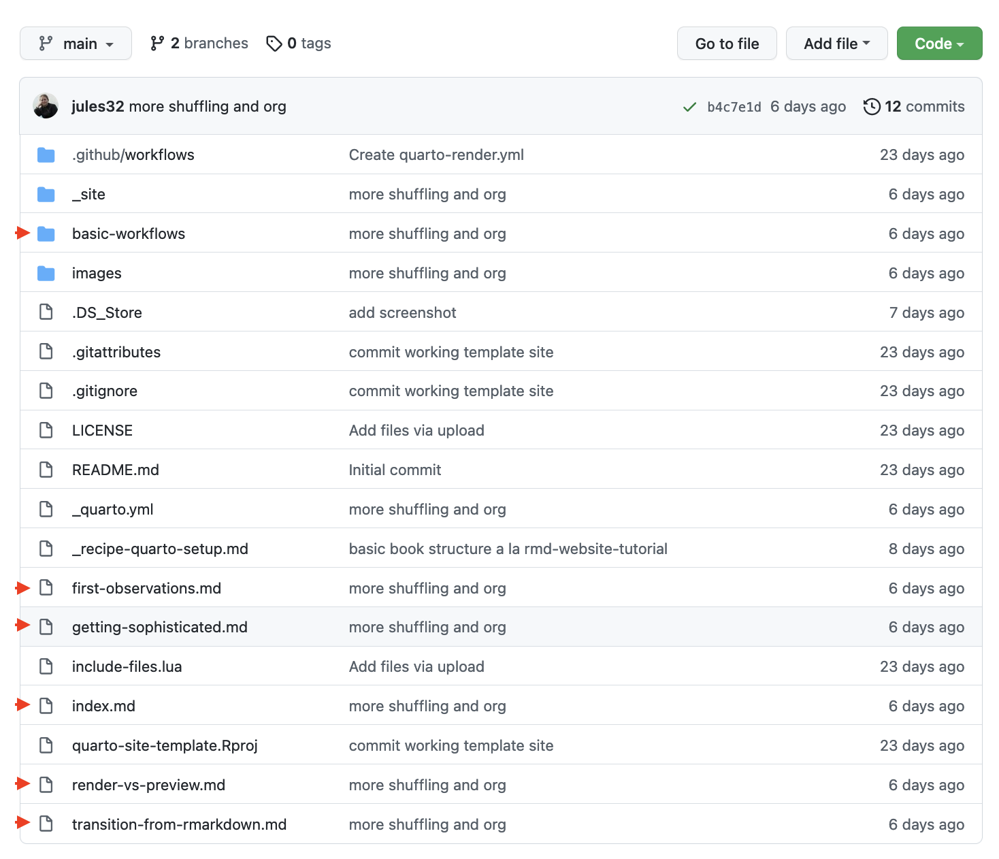
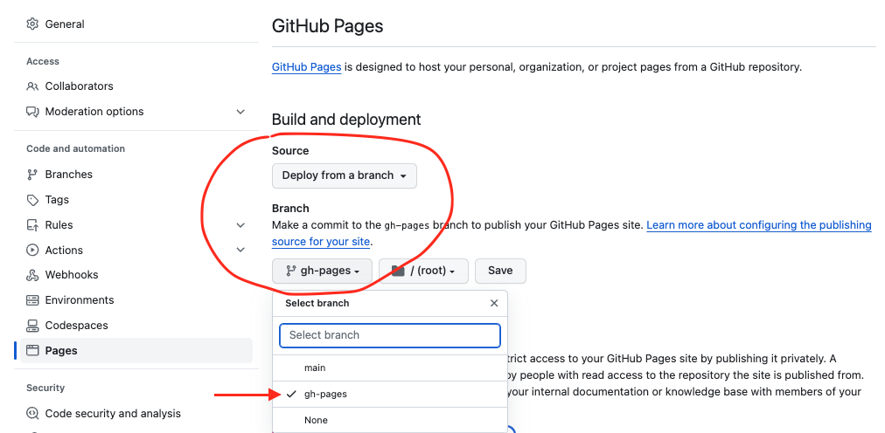

Explore and setup
With this tutorial, we have a working example website that we will explore together. We’ll learn a few rules and look for patterns to get an understanding of what things to do to help you start customizing and making it your own. And you can continue to use this website as a reference after the tutorial, along with Quarto documentation.
We’ll start our exploration online looking at the website architecture and GitHub repository. Then we’ll setup a copy for ourselves so that we can modify from a working example, which is a great way to learn something new. We’ll set it up so that any modifications (commits) will automatically be republished via GitHub Actions. Subsequent chapters will describe how to modify your repo using different tools (browser, RStudio, Jupyter).
Exploring online
The website itself
This website has 5 things you can see on the left sidebar:
- Welcome
- Exploring and setup
- Quarto workflows
- Learning more
- Transition from Rmd
Most of these are pages, but you’ll see that “Quarto Workflows” has an arrow >; it is a folder with additional pages inside.
The website’s repo
Let’s go to this website’s GitHub repository (also called a “repo”), https://github.com/openscapes/quarto-website-tutorial. You can also click there from any page in this tutorial website by clicking the GitHub octocat icon underneath the Openscapes logo in the left navbar (click it holding command on Mac, or control on a PC to open it in a different tab in your browser).
Have a look at the filenames. We can recognize the names of the webpages we’ve seen above, and they have red arrows marking them in the image below. You’ll see the “quarto-workflows” folder and the rest in this site are .qmd files, which are plain text Quarto files that can combine Markdown text with code. index.qmd is the home page. If you click inside “quarto-workflows” you’ll see a mix of filetypes!

The _site folder has html files with names that should be familiar: they match the .qmd files we were just exploring. This folder is where Quarto stores files to build the website.
_quarto.yml intro
There is also a _quarto.yml file, which is the website’s configuration file. It is essentially metadata for the website that includes the order that the pages/chapters will be in. This is where you update the organization of your website: which page comes before another. If we compare side-by-side, you’ll see that the pages that appear on our website are listed there.

_quarto.yml and website side-by-sideWe’ll learn more about how to interact with _quarto.yml in Quarto Workflows.
Fork to your account
Let’s start with an existing Quarto site and copy it into your space to edit. You’ll need a free GitHub account that you create at github.com (follow this advice about choosing your username).
First, choose an existing website to copy. The simplest option is to start with this site: quarto-website-tutorial.
Other options of potential interest:
Next, follow these steps to fork and setup your repo with GitHub Actions from Gavin Fay, using the repo you chose. These instructions will take ~5 minutes.
Now you’ve got a copy of your repo of choice in your own GitHub account, and you’re set to start making your own edits. Your GitHub repo is set up with a GitHub Action that will use Quarto to rebuild and republish your site anytime you make a commit: committing will trigger the GitHub Action to rebuild and republish the book.
Note that the GitHub Action for this book does not include R or Python so those will need to be added if your website relies on code. See https://github.com/r-lib/actions for more details and examples.
Download instead of fork
Forking might not always be the way to go - you can’t fork into the same GitHub user account or organization so if for example you want to make a copy of 2021-Cloud-Hackathon repo within the same NASA-Openscapes GitHub Organization, you’ll need to download instead of fork. In this case, follow these steps to download and copy into a new repository, and set up the GitHub Action and the gh-pages branch for publishing, separately.
Download github repo files
Navigate to https://github.com/openscapes/quarto-website-tutorial (or any other quarto site repo of choice). Click the green “Code” button and select “Download ZIP”. When it downloads on your computer, unzip the files.
Create a new GitHub repo
Navigate to your GitHub account or organization, and create a new repository, naming it what you’d like. You’ll need a free GitHub account that you create at github.com (follow this advice about choosing your username). When you’re logged in, github.com will show a green button that says “New” which you’ll also see as you navigate to your username’s repository page.
Add original site files
If you’re comfortable cloning the new repository and copying files into it locally before committing and pushing back to GitHub, that is preferable to the GitHub file uploader, which does have limitations with complex repos. The uploader does not allow upload of folders, so some manual work would be required.
To use the GitHub file uploader, click the button next to the green “Code” button that says “Add file”. Add file > Upload files. Then, on your computer, select all the files in unzipped folder (command-A or control-A), and drag them to the GitHub uploader page. Scroll down to write a commit message, which effectively saves your files when you’re working in the browser.
Set up GitHub publishing
If you’ve used the ‘Fork to your account approach’ above, your website is all set!
If you’ve set up your repo by using the ‘Download github repo files’ approach above, you’ll need to set up GitHub publishing separately. We’ll do this in a few steps: we’ll set up a GitHub Action within your repo, and create a gh-pages branch.
First, the GitHub Action. Go back to your main view of your GitHub repository by clicking on the name of your repository at the top-left (the url in your browser window should say https://github.com/username/repo-name).
Next to the green code button, click Add file > Create new file. Name it exactly this: .github/workflows/quarto-publish.yml . In detail: start by typing the . with github and when you type the / it will give you a new text box to type workflows (plural!), then another /, and finally, quarto-publish.yml.
Now you’ll have an empty new file. Paste the following in this empty file - you can click on the top-right of this box to copy all the code inside this code box:
on:
push:
branches: main
name: Render and Publish
jobs:
build-deploy:
runs-on: ubuntu-latest
steps:
- name: Check out repository
uses: actions/checkout@v2
- name: Set up Quarto
uses: quarto-dev/quarto-actions/setup@v2
with:
# To install LaTeX to build PDF book
tinytex: true
# uncomment below and fill to pin a version
# version: 0.9.600
# add software dependencies here
- name: Publish to GitHub Pages (and render)
uses: quarto-dev/quarto-actions/publish@v2
with:
target: gh-pages
env:
GITHUB_TOKEN: ${{ secrets.GITHUB_TOKEN }} # this secret is always available for github actionsCommit this to save your new quarto-publish.yml file. This is your GitHub Action.
Finally, from your main repo page, click Settings > Actions > General. Under ‘Workflow permissions’, select ‘Read and write permissions’. Save.
Next, we’ll create a new gh-pages branch. Go back to the main view of your GitHub repository. On the far left from the green “Code” button, click the button that says “main”. In the pull-down menu, type gh-pages - all lowercase, with a hyphen. Click the bold text that says “Create branch: gh-pages from main”.
Now click on the Settings tab in the top right of your repository. On the left sidebar, click Pages. At the top of Pages under “Source”, select gh-pages root, and press Save (may already be saved by default).
To view your published website, at your main repository page, on the right side, click the gear-icon, select ‘Use your GitHub Pages website’.

Confirm your website is published
To confirm that your website is published, go back to your main repository page. You’ll now see an orange dot showing that the GitHub Action is beginning to publish the page.

If you do not see this orange dot, you can re-run the GitHub Action (on the main repo page, click Actions > select the workflow you want to re-run > click the ‘Re-run all jobs’ button.
When your orange do becomes a green check, you can go inspect your published site at “https://username.github.io/your-repo). For example: https://openscapes.github.io/quarto-website-tutorial.

It can take some time for the site to deploy, so don’t worry if you don’t see it right away.
Renaming your repo
If you’d like to rename your repo, go to Settings and the option to rename is on the top of the main settings page.
Onward!
Now you are ready to start editing and publishing! The next chapter describes how starting off from the browser, using Markdown.